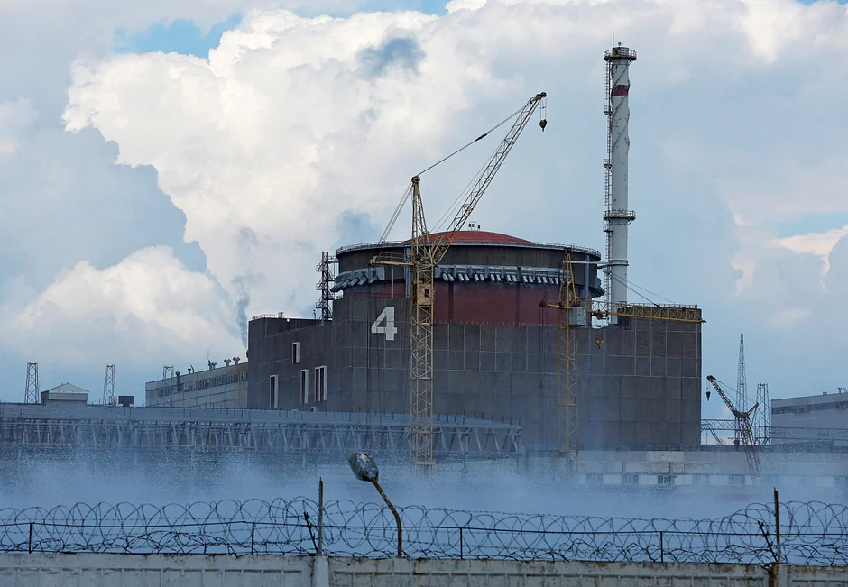

Retures Kyib/New Work
Published: 11 Aug 2022, 19: 25
A view shows the Zaporizhzhia Nuclear Power Plant in the course of Ukraine-Russia conflict outside the Russian-controlled city of Enerhodar in the Zaporizhzhia region, Ukraine on 4 August, 2022Reuters
Russia and Ukraine accused each other of shelling Europe’s biggest nuclear
power plant as the UN chief proposed a demilitarised zone at the site amid fears
of a catastrophe.
Ukraine’s Energoatom agency said the Zaporizhzhia complex was struck five
times on Thursday, including near where radioactive materials are stored.
Russian-appointed officials said Ukraine shelled the plant twice, disrupting a
shift changeover, Russia’s TASS news agency said.
The UN Security Council met on Thursday to discuss the situation. Secretary-
General Antonio Guterres called on both sides to halt all fighting near the plant.
“The facility must not be used as part of any military operation. Instead, urgent agreement is needed at a technical level on a safe perimeter of demilitarisation to ensure the safety of the area,” Guterres said in a statement.